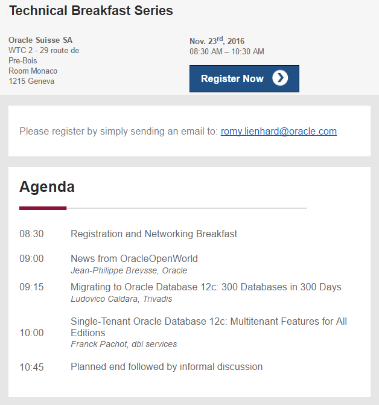

This was first published on https://www.dbi-services.com/blog/easy-datawarehouse-ods-load-in-enterprise-edition/ (2016-10-19)
Republishing here for new followers. The content is related to the versions available at the publication date.
.
In a previous post, tribute to transportable tablespaces (TTS), I said that TTS is also used to move data quickly from operational database to a datawarehouse ODS. For sure, you don’t transport directly from the production database because TTS requires that the tablespace is read only. But you can transport from a snapshot standby. Both features (transportable tablespaces and Data Guard snapshot standby) are free in Enterprise Edition without option. Here is an exemple to show that it’s not difficult to automate
I have a configuration with the primary database “db1a”
DGMGRL> show configuration
Configuration - db1
Protection Mode: MaxPerformance
Members:
db1a - Primary database
db1b - Physical standby database
Fast-Start Failover: DISABLED
Configuration Status:
SUCCESS (status updated 56 seconds ago)
DGMGRL> show database db1b
Database - db1b
Role: PHYSICAL STANDBY
Intended State: APPLY-ON
Transport Lag: 0 seconds (computed 0 seconds ago)
Apply Lag: 0 seconds (computed 0 seconds ago)
Average Apply Rate: 0 Byte/s
Real Time Query: ON
Instance(s):
db1
Database Status:
SUCCESS
I’ve a few tables in the tablespace USERS and this is what I want to transport to ODS database:
SQL> select segment_name,segment_type,tablespace_name from user_segments;
SEGMENT_NAME SEGMENT_TY TABLESPACE
------------ ---------- ----------
DEPT TABLE USERS
EMP TABLE USERS
PK_DEPT INDEX USERS
PK_EMP INDEX USERS
SALGRADE TABLE USERS
With Data Guard it is easy to open temporarily the standby database. Just convert it to a snapshot standby with a simple command:
DGMGRL> connect connect system/oracle@//db1b
DGMGRL> convert database db1b to snapshot standby;
Converting database "db1b" to a Snapshot Standby database, please wait...
Database "db1b" converted successfully
Here you can start to do some Extraction/Load but better to reduce this window where the standby is not in sync. The only thing we will do is export the tablespace in the fastest way: TTS.
First, we put the USERS tablespace in read only:
SQL> connect system/oracle@//db1b
Connected.
SQL> alter tablespace users read only;
Tablespace altered.
and create a directory to export metadata:
SQL> create directory TMP_DIR as '/tmp';
Directory created.
Then export is easy
SQL> host expdp system/oracle@db1b transport_tablespaces=USERS directory=TMP_DIR
Starting "SYSTEM"."SYS_EXPORT_TRANSPORTABLE_01": system/********@db1b transport_tablespaces=USERS directory=TMP_DIR
Processing object type TRANSPORTABLE_EXPORT/TABLE_STATISTICS
Processing object type TRANSPORTABLE_EXPORT/STATISTICS/MARKER
Processing object type TRANSPORTABLE_EXPORT/PLUGTS_BLK
Processing object type TRANSPORTABLE_EXPORT/POST_INSTANCE/PLUGTS_BLK
Processing object type TRANSPORTABLE_EXPORT/TABLE
Processing object type TRANSPORTABLE_EXPORT/CONSTRAINT/CONSTRAINT
Master table "SYSTEM"."SYS_EXPORT_TRANSPORTABLE_01" successfully loaded/unloaded
******************************************************************************
Dump file set for SYSTEM.SYS_EXPORT_TRANSPORTABLE_01 is:
/tmp/expdat.dmp
******************************************************************************
Datafiles required for transportable tablespace USERS:
/u02/oradata/db1/users01.dbf
Job "SYSTEM"."SYS_EXPORT_TRANSPORTABLE_01" successfully completed at Wed Oct 19 21:03:36 2016 elapsed 0 00:00:52
I’ve the metadata in /tmp/expdat.dmp and the data in /u02/oradata/db1/users01.dbf. I copy this datafile directly in his destination for the ODS database:
[oracle@VM118 ~]$ cp /u02/oradata/db1/users01.dbf /u02/oradata/ODS/users01.dbf
This is physical copy, which is the fastest data movement we can do.
I’m ready to import it into my ODA database, but I can already re-sync the standby database because I extracted everything I wanted.
DGMGRL> convert database db1b to physical standby;
Converting database "db1b" to a Physical Standby database, please wait...
Operation requires shut down of instance "db1" on database "db1b"
Shutting down instance "db1"...
Connected to "db1B"
Database closed.
Database dismounted.
ORACLE instance shut down.
Operation requires start up of instance "db1" on database "db1b"
Starting instance "db1"...
ORACLE instance started.
Database mounted.
Connected to "db1B"
Continuing to convert database "db1b" ...
Database "db1b" converted successfully
DGMGRL>
The duration depends on the time to flashback the changes (and we did no change here as we only exported) and the time to apply the redo stream generated since the convert to snapshot standby (which duration has been minimized to its minimum).
This whole process can be automated. We did that at several customers and it works well. No need to change anything unless you have new tablespaces.
Here is the import to the ODS database and I rename the USERS tablespace to ODS_USERS:
SQL> host impdp system/oracle transport_datafiles=/u02/oradata/db2B/users02.dbf directory=TMP_DIR remap_tablespace=USERS:ODS_USERS
Master table "SYSTEM"."SYS_IMPORT_TRANSPORTABLE_01" successfully loaded/unloaded
Starting "SYSTEM"."SYS_IMPORT_TRANSPORTABLE_01": system/******** transport_datafiles=/u02/oradata/ODS/users01.dbf directory=TMP_DIR remap_tablespace=USERS:ODS_USERS
Processing object type TRANSPORTABLE_EXPORT/PLUGTS_BLK
Processing object type TRANSPORTABLE_EXPORT/TABLE
Processing object type TRANSPORTABLE_EXPORT/CONSTRAINT/CONSTRAINT
Processing object type TRANSPORTABLE_EXPORT/TABLE_STATISTICS
Processing object type TRANSPORTABLE_EXPORT/STATISTICS/MARKER
Processing object type TRANSPORTABLE_EXPORT/POST_INSTANCE/PLUGTS_BLK
Job "SYSTEM"."SYS_IMPORT_TRANSPORTABLE_01" completed with 3 error(s) at Wed Oct 19 21:06:18 2016 elapsed 0 00:00:10
Everything is there. You have all your data in ODS_USERS. You can have other data/code in this database. Only the ODS_USERS tablespace have to be dropped to be re-imported. You can have your staging tables here adn even permanent tables.
In 12.1 it is even easier because the multitenant architecture gives the possibility to transport the pluggable databases in one command, through file copy or database links. It is even faster because metadata are transported physically with the PDB SYSTEM tablespace. I said multitenant architecture here, and didn’t mention any option. Multitenant option is needed only if you want multiple PDBs managed by the same instance. But if you want the ODS database to be an exact copy of the operational database, then you don’t need any option to unplug/plug.
In 12.1 you need to put the source in read only, so you still need a snapshto standby. And from my test, there’s no problem to convert it back to physical standby after a PDB has been unplugged. In next release, we may not need a standby because it has been announced that PDB can be cloned online.
I’ll explain the multitenant features available without any option (in 12c current and next release) at Oracle Geneva office on 23rd of November:

Do not hesitate to register by e-mail.